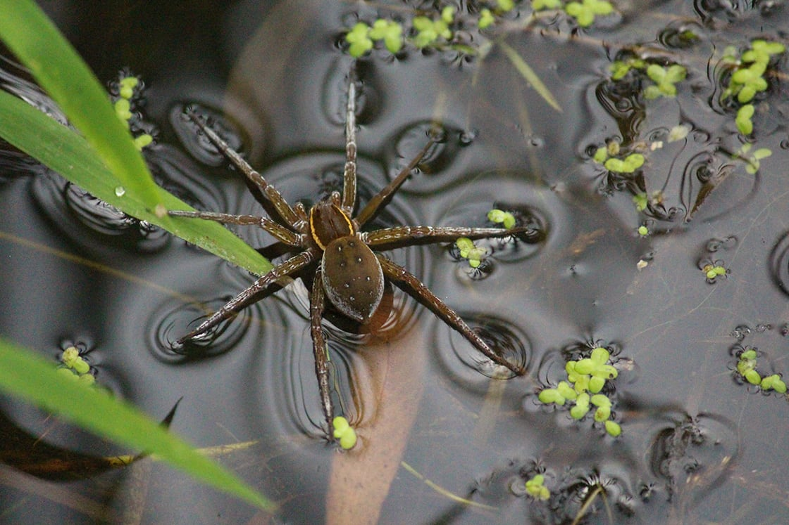
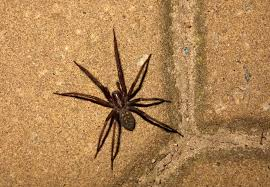
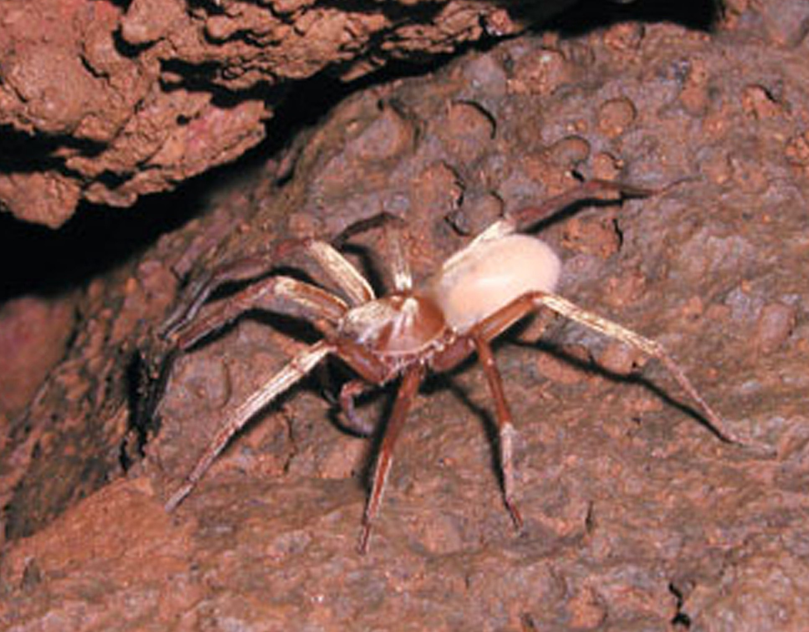

Spiders Habitat



Spiders are incrediblyu adaptable and they are almost found in every habitat on earth, with the execptions being the polar regions, the highest mountains,and the open ocean. Spiders can live in forests,grasslands to gardens,building, and even the intertidal zones near oceans. The also live in caves and hollow trees, wood piles and rocky areas, and leaf litter. Some key factors in a spider habitat is food, shelter, moisture, web-building sites, and temperature. Some in the spiders live in our homes some of those places are dark,secluded spots, and nooks and crannies.